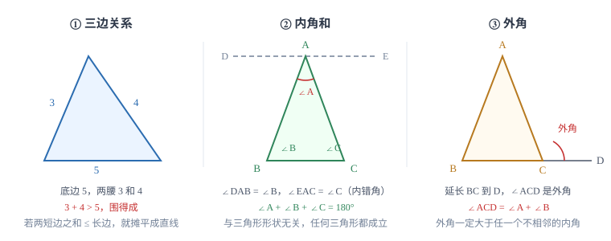

三角形的基本性质
三条线段能不能围成三角形，由三边关系一票决定；三个内角加起来恒为 180°，而外角把「外面那个角」换成两个内角的和。这两条是后面所有几何推理的地基。
| 所属主题 | 三角形 |
|---|---|
| 所属模块 | 几何 |
| 课标学段 | 第四学段（7~9 年级） |
| 前置知识 | 相交线与平行线 |
| 核心素养 | 几何直观推理能力 |
教材定位
人民教育出版社《人教版（2024版）义务教育教科书·数学》
八年级上册第13章 三角形13.1 三角形的概念13.2 与三角形有关的线段13.3 三角形的内角与外角
对应八上 13.1~13.3：三角形的概念、与三角形有关的线段（边、中线、角平分线、高）、内角与外角。
说明
由不在同一直线上的三条线段首尾顺次相接围成的图形叫做三角形。三个顶点、三条边、三个内角是它的全部零件。除此之外还有三条常用线段：从顶点向对边中点连的线段叫中线，平分内角且与对边相交的线段叫角平分线，从顶点向对边所在直线作垂线得到的线段叫高。三条都是线段，不是直线也不是射线，这一点在写「高等于几」时经常被写错。
三角形的边和角各受一条硬约束。边受不等式约束：任意两边之和大于第三边，等价地，任意两边之差小于第三边。角受等式约束：三个内角之和恒为 180°。两条约束的分工很清楚——判断三条线段能否围成三角形，用边；已知几个角求另一个角，用角。
使用场景
判断三条线段能否围成三角形，只需检验「两条较短边之和是否大于最长边」，一次就够，不必把三组都算一遍。已知两边求第三边范围时，答案是 |a-b|<x<a+b，两端都不能取等号：取等号时三条线段会摊平成一条直线，围不出图形。
求角度时先看有没有现成的外角。外角等于与它不相邻的两个内角之和，所以它能把「分散在两个三角形里的两个角」一次性换成「一个角」。角平分线、平行线、外角这三个条件凑在一起，通常就是一道求角题的全部线索。
注意点
高不一定落在图形内部。锐角三角形的三条高都在形内；直角三角形有两条高就是两条直角边，第三条高在形内；钝角三角形有两条高落在形外。画高时要看顶点的对边所在的直线，而不是对边线段本身，钝角三角形的高正是靠这一点才画得出来。
用外角定理时，加的是「与它不相邻」的两个内角，不是加旁边那个内角。外角与相邻内角互补，两者加起来才是 180°，关系完全不同。
证明

图 1：三角形两条最基本的约束。边受不等式约束，角受等式约束
证明
结论 1过顶点作平行线，把内角和问题转成平角问题。
先看内角和为什么一定是 180^\circ。过顶点 A 作一条平行于 BC 的直线 DE，这一步只用到平行公理。
关键一步关键一步是平行公理：过直线外一点有且只有一条直线与已知直线平行，所以这条 DE 画得出来、位置唯一。这一步的价值是把 \angle B、\angle C 搬到顶点 A 附近，让三个角能凑成一个平角。
结论 2由 DE\parallel BC 得两组相等的内错角：\angle DAB=\angle B，\angle EAC=\angle C。
因为 DE\parallel BC，内错角相等，所以 \angle DAB=\angle B，\angle EAC=\angle C。
关键一步关键一步是平行线的性质而不是判定：这里 DE\parallel BC 是已知的条件，要用性质去取角的数值。DE 与 BC 被 AB、AC 分别所截，形成两组内错角，两组等式才同时成立。
结论 3点 A 处的三个角恰好拼成一个平角，三者之和是 180^\circ。
点 A 处三个角拼成一个平角：\angle DAB+\angle BAC+\angle EAC=180^\circ。
关键一步关键一步是平角的定义与角的和的可加性：DE 是直线，射线 AB、AC 把它切开的角分成三段，三段之和就是整个平角。这一步只用「整角等于各部分之和」，不含任何角度测量。
结论 4把两个内错角换回 \angle B、\angle C，得 \angle B+\angle BAC+\angle C=180^\circ。
把两个内错角换回 \angle B、\angle C，得到 \angle B+\angle BAC+\angle C=180^\circ。全程只用平行线的性质，没有量角器，所以对任意形状的三角形都成立。
关键一步关键一步是等量代换：上一条中 \angle DAB 与 \angle B 相等、\angle EAC 与 \angle C 相等，把它们代进平角的和式，等式两边同时代换仍然相等。全程只用平行线的性质和平角定义，没有量角器，所以结论与三角形的形状、大小无关。
结论 5三角形的一个外角等于与它不相邻的两个内角之和。
外角定理是它的直接推论。延长 BC 到 D，外角 \angle ACD 与内角 \angle ACB 互补：\angle ACD=180^\circ-\angle ACB。再由内角和得 \angle ACB=180^\circ-(\angle A+\angle B)，两式相减即得 \angle ACD=\angle A+\angle B。
关键一步关键一步是外角与相邻内角互补：延长 BC 到 D 后，\angle ACD 与 \angle ACB 共用一条边、另一边互为反向延长线，所以 \angle ACD=180^\circ-\angle ACB。再代入内角和 \angle ACB=180^\circ-(\angle A+\angle B)，两式相减就把 \angle ACB 消掉，剩下的正是外角等于不相邻两内角之和。
动手实验
剪一个纸三角形，把三个角撕下来，顶点对顶点拼在一起，三条边正好接成一条直线——三个角拼成一个平角。换一个钝角三角形再试，结果一样，说明 180° 与三角形的形状、大小都无关。
解题思路
几何题的读图顺序固定三步。第一步标已知：把题目给的等边、等角、垂直、中点用符号标到图上，不标到图上就等于没读。第二步问目标：要求角、求边、还是要证相等？第三步选工具：求角优先凑内角和与外角，求边优先凑三边关系（勾股定理后面才学），证相等优先找全等（下一篇就学）。工具选错，算出再多也无用。
遇到「两个角分散在两个三角形里」的问法，先找它们能不能通过外角并到一处。比如 A、D、C 三点共线（D 在中间）：\angle BDC 是 \triangle ABD 的外角，等于 \angle A+\angle ABD；\angle BDA 是 \triangle BCD 的外角，等于 \angle DBC+\angle C。这两个外角恰好又是一对邻补角，两条算式一写出来，往往就能列出方程。
按场景的例题
例 1（场景：图形设计） 用两根现成木条搭三角形花架
要用两根长 3 分米和 7 分米的木条，做一个有两条边相等的三角形花架，第三根木条应截多长？花架周长是多少？
解：分两种情况。若相等的边长为 3 分米，则三边为 3、3、7，但 3+3=6<7，围不成三角形，舍去。若相等的边长为 7 分米，三边为 7、7、3，3+7>7 成立，周长 =7+7+3=17。
答：第三根截 7 分米，周长 17 分米。
例 2（场景：竞技与游戏） 三角形拼图板的角标注
在 \triangle ABC 中，\angle A=50^\circ，\angle B=60^\circ，CD 平分 \angle ACB 交 AB 于 D，求 \angle ACD 与 \angle BDC。
解：先求第三个内角：\angle ACB=180^\circ-50^\circ-60^\circ=70^\circ。CD 平分它，所以 \angle ACD=70^\circ÷ 2=35^\circ。再看 \angle BDC：因为 B 在 AD 的延长线上，所以 \angle BDC 是 \triangle ACD 在顶点 D 处的外角，与 \angle ADC 互补，直接用外角定理得 \angle BDC=\angle A+\angle ACD=50^\circ+35^\circ=85^\circ。验算：在 \triangle BCD 中，\angle BCD=35^\circ，\angle B=60^\circ，内角和给出 \angle BDC=180^\circ-35^\circ-60^\circ=85^\circ，两种算法一致。
答：\angle ACD=35^\circ，\angle BDC=85^\circ。
例 3（场景：测量与工程） 人字屋架的夹角验收
一个人字屋架的横截面是 \triangle ABC，测得 \angle A=35^\circ，\angle B=85^\circ。求屋脊处的外角 \angle ACD（延长 BC 到 D 所得），并判断这个三角形按角分类属于哪一类。
解：先求顶角：\angle ACB=180^\circ-35^\circ-85^\circ=60^\circ。外角与相邻内角互补，\angle ACD=180^\circ-60^\circ=120^\circ。用外角定理验算：\angle ACD=\angle A+\angle B=35^\circ+85^\circ=120^\circ，一致。三个内角 35°、85°、60° 都小于 90°，所以是锐角三角形。
答：外角 120^\circ，这个三角形是锐角三角形。
常用推论
三角形的外角大于任何一个与它不相邻的内角。这条不等式是初中阶段证明「角不相等」「边不相等」的常用工具。
三边关系的等价说法：两边之差小于第三边。已知两边求第三边范围时，两头都开区间。
直角三角形的两个锐角互余；等边三角形的每个内角都是 60°；等腰三角形的两个底角相等。这三条都是内角和定理的直接结果，不需要另记（等腰、等边三角形的专门性质等学了 等腰三角形与等边三角形 再展开，这里先用内角和算一算）。
易错点
错三角形两边为 3 和 5，第三边 x 的范围写成 2≤ x≤ 8。
为什么错三边关系是严格不等式。x=2 时三边为 2、3、5，2+3=5，三点共线；x=8 时同样摊平。
正确2<x<8，两端都不能取等号。
错在钝角三角形里，从钝角顶点向对边作高，把垂足画在了对边线段上。
为什么错钝角三角形中，钝角顶点到对边的高落在形内；但两个锐角顶点的高要落到对边的延长线上，因为垂足落在线段之外。
正确画高先延长对边所在直线，再从顶点作垂线，垂足落在延长线上也照样是高。
错已知一个外角为 120^\circ，答「与它相邻的内角是 60^\circ，另外两个内角之和也是 120^\circ，所以每个是 60^\circ」。
为什么错外角定理只给出另外两个内角的「和」是 120^\circ，不能推出它们相等。只有再加上等腰或角平分线条件，才能平分这个和。
正确只能确定两角之和为 120^\circ；要得到每个角的具体度数，还需要题目给出相等关系。
直观理解
三角形是最「硬」的图形：三条边一定，形状就定死了，所以它撑得住。四边形一推就歪，正因为四条边锁不住形状。内角和像一笔固定预算——三个角怎么分都行，加起来只能是 180°，一个角多占，另外两个就得让出来。